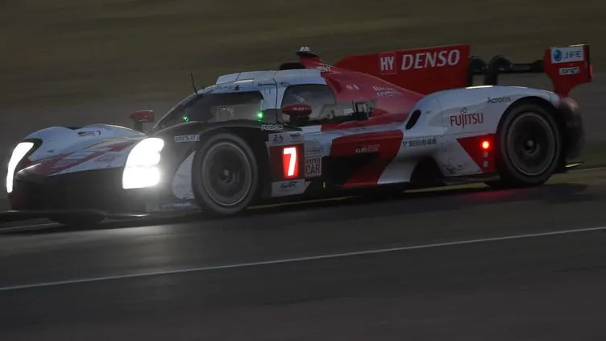
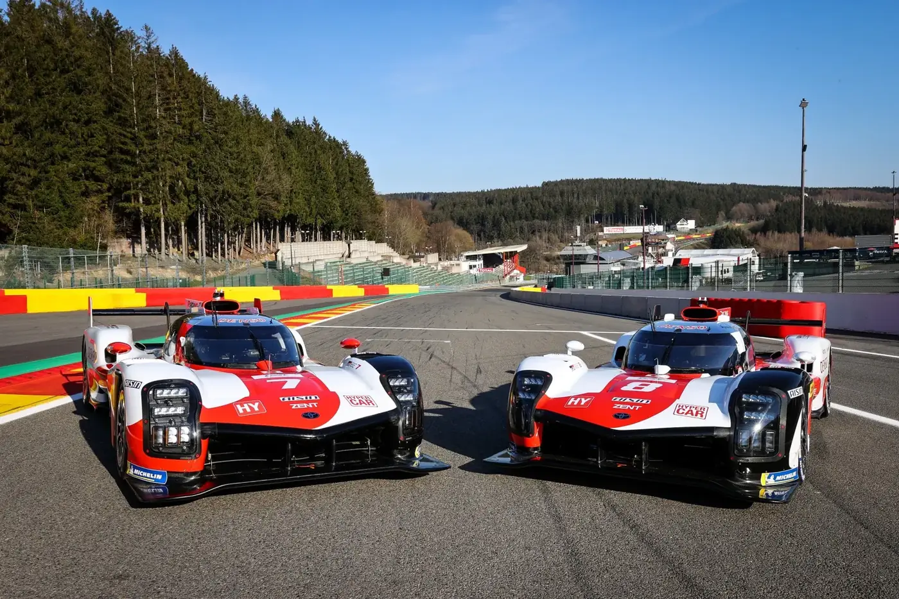
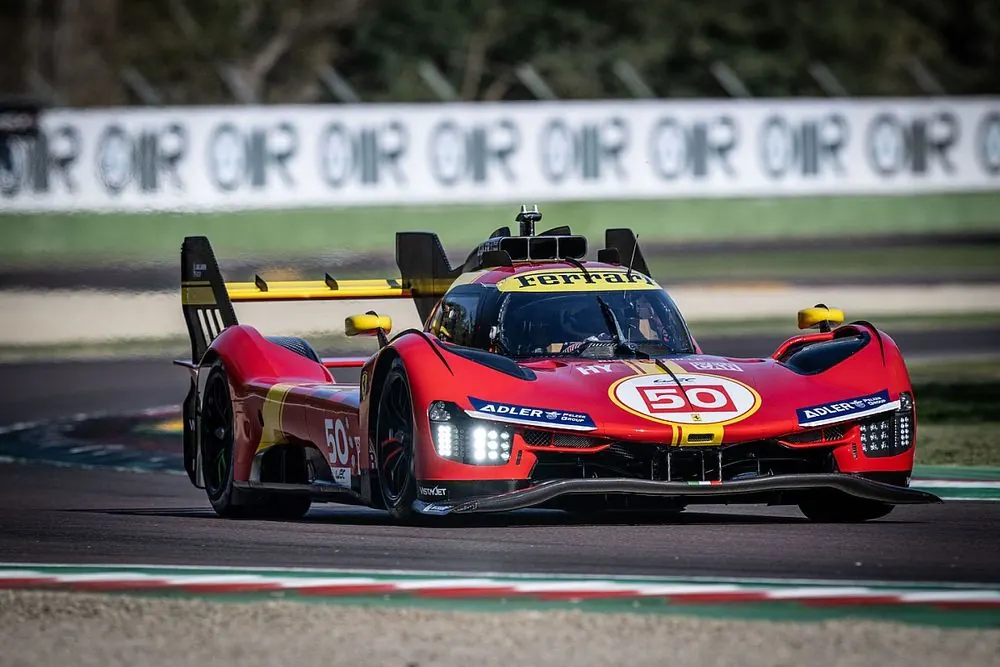
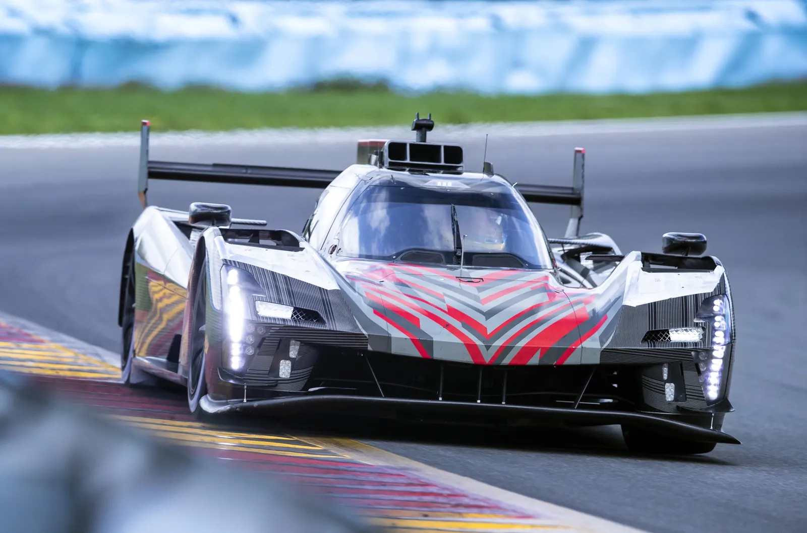

Le triplé Ferrari
La 499P a gagné toutes les éditions de 2023 à 2025. En 2025, c'est même une voiture privée, la n°83 d'AF Corse, qui l'emporte.

La seule course automobile au monde disputée pendant 24 heures de compétition continue. Voici les voitures, les écuries et les histoires de l'ère Hypercar, du centenaire de 2023 à la victoire de Toyota en 2026.

La première édition des 24 Heures du Mans a eu lieu en 1923. Pour fêter les 100 ans de sa course, l'ACO (Automobile Club de l'Ouest) a organisé une édition exceptionnelle en 2023.
Pour l'occasion, de grands constructeurs sont revenus dans la catégorie reine avec des voitures toujours plus rapides et plus aérodynamiques : Ferrari, Porsche, Cadillac et Peugeot ont rejoint Toyota et Glickenhaus.
L'édition s'est jouée à guichets fermés : plus de 300 000 spectateurs étaient présents. À l'arrivée, c'est la Ferrari 499P n°51 qui l'a emporté, 58 ans après la dernière victoire de la marque italienne.
Trois victoires Ferrari d'affilée, puis le retour de Toyota sur la plus haute marche.
499P n°51
Pier Guidi · Calado · Giovinazzi
L'édition du centenaire.
499P n°50
Fuoco · Molina · Nielsen
Sous la pluie, devant un public record.
499P n°83 (AF Corse)
Kubica · Ye · Hanson
Une voiture privée l'emporte.
TR010 Hybrid n°7
Conway · Kobayashi · de Vries
Toyota met fin à la série Ferrari.
Nouveaux constructeurs, départs, nouvelle catégorie GT et records : le résumé de trois années mouvementées.
La 499P a gagné toutes les éditions de 2023 à 2025. En 2025, c'est même une voiture privée, la n°83 d'AF Corse, qui l'emporte.
En 2026, la nouvelle Toyota TR010 n°7 met fin à la série Ferrari et offre au constructeur japonais sa 6e victoire au Mans.
BMW, Alpine, Lamborghini et Isotta Fraschini arrivent en 2024, Aston Martin et sa Valkyrie V12 en 2025, puis Genesis en 2026.
Glickenhaus quitte la course après 2023 et Lamborghini après 2024. Fin 2025, Porsche retire son équipe d'usine du championnat du monde.
Depuis 2024, la catégorie GT utilise des voitures GT3 dérivées de la série. Elles roulent aux côtés des Hypercars et des LMP2.
En 2024, 329 000 spectateurs ont assisté à la course, un record pour les 24 Heures du Mans.
Deux règlements cohabitent. Les LMH (Le Mans Hypercar) sont conçues librement par le constructeur. Les LMDh partagent un châssis et un système hybride standards. Une « Balance de Performance » ajuste le poids et la puissance pour que toutes restent proches, autour de 680 ch.




Un tour animé des 13,626 km et de leurs virages légendaires.
→ 📘Catégories, règlements, drapeaux : tout pour suivre les 24 Heures.
→ 🕰️De 1923 à aujourd'hui, les moments qui ont fait la légende.
→ 🧑🚀Les vainqueurs de l'ère Hypercar et leurs exploits.
→ ⚖️Mettez deux hypercars face à face.
→ ❓Êtes-vous incollable sur Le Mans ?
→Nombre de victoires au classement général par constructeur, après l'édition 2026. Porsche reste loin devant, mais Ferrari remonte vite avec trois succès depuis 2023.